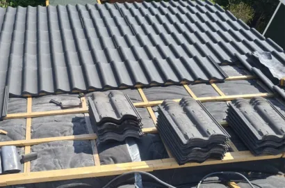

Dakpannen
Deskundige installatie en onderhoud, met de garantie van langdurige kwaliteit en een aantrekkelijk uiterlijk.
Lees meerOnze SERVICES
Deskundige installatie en onderhoud, met de garantie van langdurige kwaliteit en een aantrekkelijk uiterlijk.
Lees meerVoorkomt lekkages en beschermt uw dak door beschadigde nokvorsten te vervangen of te repareren.
Lees meerLoodwerk zorgt voor waterdichte aansluitingen en langdurige bescherming tegen lekkages.
Lees meerOnze service voor het branden van bitumen daken zorgt voor een waterdichte en duurzame afwerking.
Lees meer